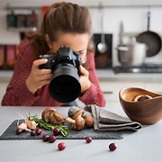

Cooking Tips and Techniques
Knife Skills 101
Master the art of chopping, slicing, and dicing like a pro with our comprehensive guide to knife skills.
Flavor Pairing
Discover the secrets of flavor pairing and learn how to create harmonious flavor combinations that will take your dishes from good to extraordinary.
Perfecting the Sear
Unlock the secrets to achieving the perfect sear on meats and seafood, imparting irresistible flavor and texture to your dishes.
Safety in the kitchen
Unlock the secrets to achieving the perfect sear on meats and seafood, imparting irresistible flavor and texture to your dishes.
